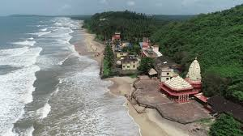
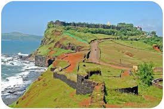
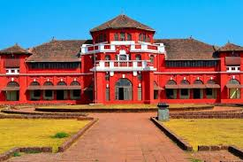
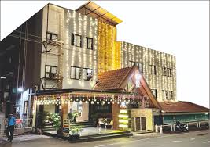

Ratnagiri is a historic coastal city in Maharashtra, famous for its pristine beaches, mango orchards, and rich cultural heritage. It is widely known as the home of the Alphonso mango.

A spectacular beach known for clear waters and scenic sunsets.

A historic hill fort surrounded by the Arabian Sea on three sides.

A royal palace once home to the exiled King Thibaw of Burma.

rating: 4.4 | Comfortable stay near major attractions.
rating: 4.6 | Luxury beachside resort with panoramic views.